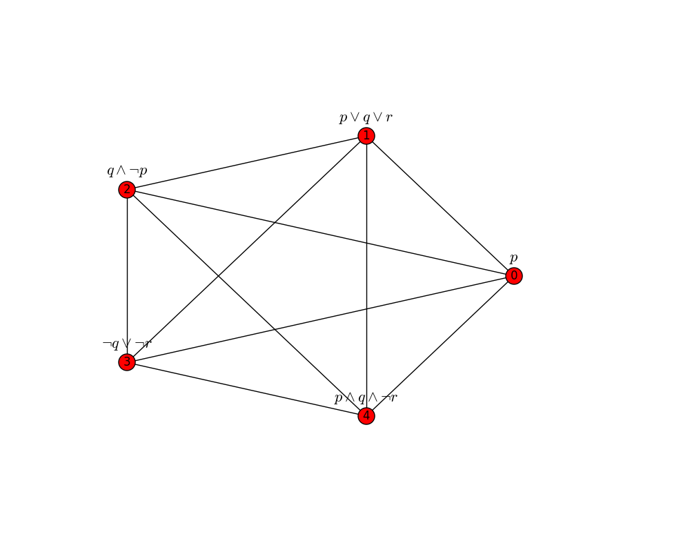
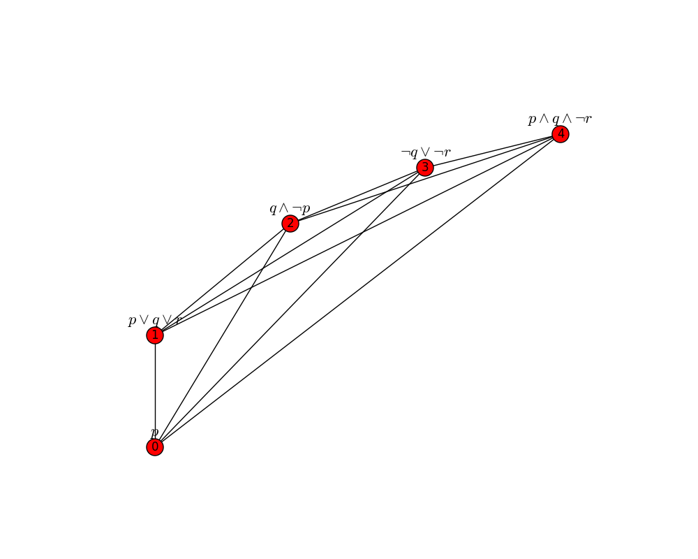
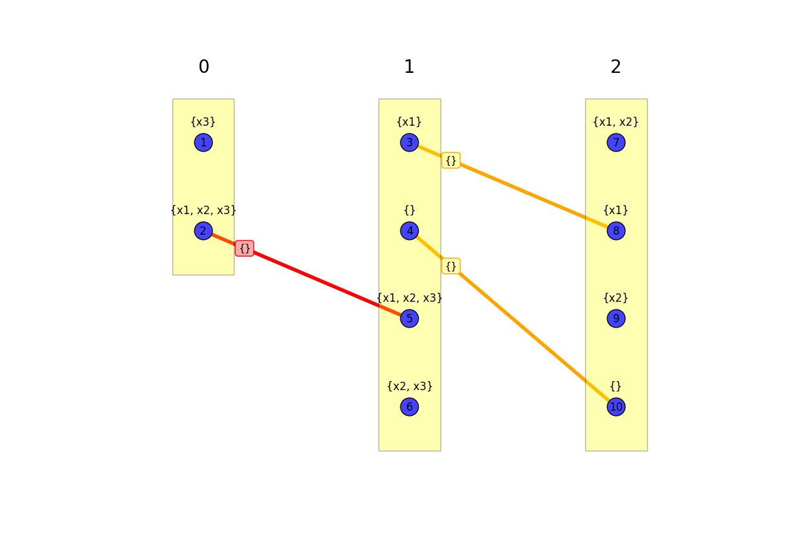
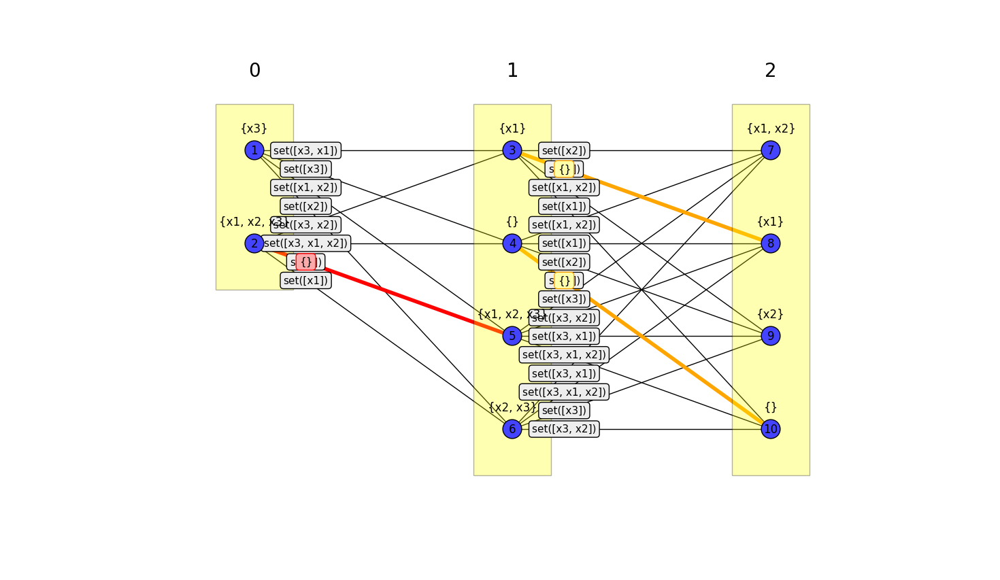
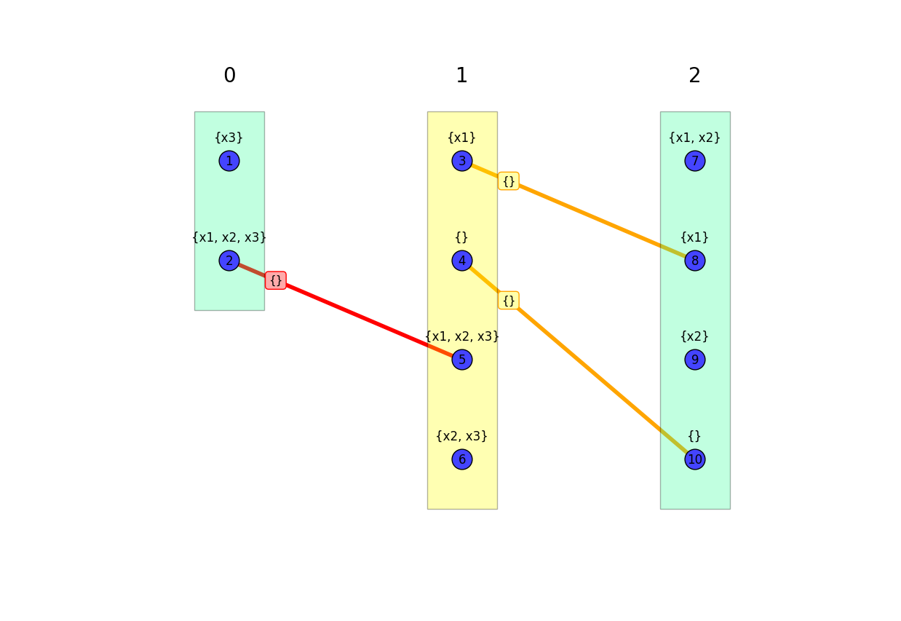

Visualization¶
Equibel provides functions that enable visualization of:
- Arbitrary graphs with associated scenarios;
- Model graphs corresponding to base graphs, for the restricted case where the base graphs are paths
The visualization functions require the matplotlib package, which
can be installed via pip as follows:
$ [sudo] pip install matplotlib
Drawing Graphs¶
Equibel extends the graph drawing capabilities of NetworkX by adding the option to display formulas associated with nodes. Such formulas are displayed above their respective nodes, and are typeset using LaTeX.
First, we create a graph to display:
>>> import equibel as eb
>>> G = eb.complete_graph(5)
>>> G.add_formula(0, 'p')
>>> G.add_formula(1, 'p | q | r')
>>> G.add_formula(2, '~p & q')
>>> G.add_formula(3, '~q | ~r')
>>> G.add_formula(4, 'p & q & ~r')
To visualize graphs interactively while in the terminal, it is recommended that you use the
iPython interpreter.
Then, before invoking the Equibel methods to draw graphs (or model graphs), you must
enter the iPython magic command %matplotlib (more information about iPython magic commands can
be found here).
This magic command sets up matplotlib to work interactively.
>>> %matplotlib
The draw_graph method is used to display the graph, as follows:
>>> eb.draw_graph(G)

By default, the spatial layout of nodes is determined by the NetworkX spring_layout() method,
which is stochastic, and produces slightly different results each time it is called. This is
usually sufficient for interactive experimentation; however, if you want more control over how nodes
are laid out, you can specify the exact coordinates of each node in the graph. This is done by
creating a dictionary that maps each node identifier to a 2-tuple representing the
x- and y-coordinates of the node:
>>> positions = {0: (0,0), 1: (0, 1), 2: (1, 2), 3: (2,2.5), 4: (3,2.8)}
Then, this dictionary can be passed to the draw_graph method via a keyword argument
pos=positions, as follows:
>>> eb.draw_graph(G, pos=positions)

Drawing Model Graphs¶
Equibel also enables visualization of model graphs.
First, we create a graph G:
>>> G = eb.path_graph(3)
>>> G.add_formula(0, '(x1 = x2) & x3')
>>> G.add_formula(1, 'x2 = x3')
>>> G.add_formula(2, '~x3')
To display the model graph of G, we use the function draw_path_model_graph, as follows:
>>> eb.draw_path_model_graph(G)

To reduce clutter, by default, only minimal model edges are shown. Of these minimal edges, the ones that are unique minimal are highlighted red, while the ones that are duplicated minimal are highlighted yellow. These edges are generally sufficient to identify the pertinent properties of the base graph.
Alternatively, all model edges (minimal or not) can be displayed by setting the keyword argument
show_only_min_edges to False, as follows:
>>> eb.draw_path_model_graph(G, show_only_min_edges=False)

Model graphs are a useful representation for understanding the relationships between
various approaches to belief change. They are useful for examining why a certain approach
produced a certain result. In order to facilitate comparisons between approaches,
and to help the user to focus on the relevent parts of a model graph, there is
an optional argument to the draw_path_model_graph() function that highlights nodes
for which the results of two approaches differ.
To explain this functionality, we first perform some belief change operations on the graph G:
>>> R_global = eb.global_completion(G, simplify=True)
>>> R_expanding = eb.iterate_expanding(G, simplify=True)
>>> R_global == R_expanding
False
As you can see, the results of the global completion and the first expanding iteration differ.
In order to help to visualize the differences between them, and, in particular, to localize the
factors that lead to these differences, one can pass two additional arguments to the
draw_path_model_graph() function, which are EquibelGraph
objects that represent the results of different approaches performed on the base graph G.
Then, the draw_path_model_graph() function determines for which nodes the resultant formulas
of the two approaches differ, and it highlights the boxes around the model vertices corresponding
to those nodes when drawing the model graph of G:
>>> eb.draw_path_model_graph(G, R_expanding, R_global)
